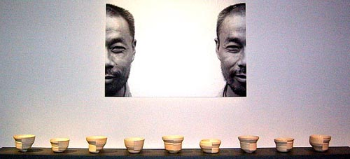

| 3rd World Ceramic
Biennale 2005 Korea
23rd April to 19th June 2005
The
3rd International Competition, one of the main events
at the World Ceramic Biennale, aims not only to discover newly emerging
artists with potential power but also to foster and support their
creativity. Prestigious ceramic specialists from every continent
have screened the entries of ceramic artists from more than 60 countries.
The top-notch awarding prize is one of the outstanding points that
have attracted world ceramists' attention. This year's theme was
'Ceramics: The Vehicle of Culture'.
2,019 of Ceramic artists from 69 countries submitted 4,206 entries
in the first International Competition in 2001, and 1,481 artists
submitted 2,454 entries in the second International Competition
in 2003. Recently, most of the artists who have participated in
previous International Competitions organized by WOCEF have increasingly
exhibited their works in the world, proving that this International
Competition is becoming a springboard to recognition.
The final selection of the ‘3rd World Ceramic Biennale 2005
Korea International Competition’ was held from February 1st
through 3th for 3 days. The Grand Prize winner is Mr. Philippe BARDE
(Switzerland), his work Human Bowl Faces from ceramics
for use will receive a 60 million won prize. The Gold Prize (ceramics
for use) went to Mr. Masanobu IDO (Japan)'s Sole and
Ms. Kwai Ying (Irene) LAU's (China) Still Life (ceramics
as expression) were selected. Further awards included 4 works for
Silver Prize, 6 works for Bronze Prize, 8 works for Special Prize,
and 5 works for the Juror's Prize, totalling 26 works. All the 186
selected works including 26 works for the prize will be exhibited
in the 3rd World Ceramic Biennale in Icheon, Korea from 23rd April
to 19th June 2005.

Human Bowl Faces, by Philippe Barde
Other events being held during the biennale.
World
Contemporary Ceramics Exhibition
 The
world contemporary ceramics exhibition, 'Trans-Ceramic-Art' seeks
to divine the future of ceramic art by presenting a new paradigm
of ceramic art works in which diverse genres are crossed and integrated.
This exhibition showcases the great potential of contemporary ceramic
arts and diversity of culture reflected in ceramic arts, rather
than presenting art in a chronological manner. The
world contemporary ceramics exhibition, 'Trans-Ceramic-Art' seeks
to divine the future of ceramic art by presenting a new paradigm
of ceramic art works in which diverse genres are crossed and integrated.
This exhibition showcases the great potential of contemporary ceramic
arts and diversity of culture reflected in ceramic arts, rather
than presenting art in a chronological manner.
This exhibition is arranged after consultation with some twenty
experts in ceramics including James Melchert, Emeritus Professor
of University of California at Berkeley; Ronald Kuchta, Editor of
American Ceramics; Koos de Jong, Director of the European Ceramic
Work Center; and Shin Sang-ho, Professor of Hongik University. Looking
at the hot issues of ceramics today, the realm of ceramics has expanded
and now engenders painting, sculpture, installation and audio/visual
images, expressing subjects about the identity of individuals such
as the human body, details of everyday life, departure from tradition,
ecology and consumerism, and addressing social issues entailing
changes in everyday routines, history, culture, and politics.
This exhibition of world contemporary ceramics is separate from
the exhibition of the International Competition, which highlights
all the major trends in ceramic art generally. Unlike the International
Competition, Trans-Ceramic-Art is a contextual exhibition featuring
culture and pure art. Contemporary ceramic art has multiple meanings
and represents a significant step in cultural development in addition
to 'medium' and 'creativity,' basic elements of artwork. Focusing
on contextual aspects of contemporary ceramic art, Trans-Ceramic-Art
is arranged as an exhibit with themes and explanations. This exhibition
will be composed of 1) Beyond Medium, 2) Metaphor of the Body, 3)
Poetics of Domestic 4) History, Tradition, and Culture, and 5) Post-global
Society.
Traditional
Korean Ceramics: Ceramics in Nature
Newly Introduced Exhibition to help understand the beauty and the
characteristics of Korean Ceramic
This exhibition is aimed to look into the esthetic character and
distinctive feature of Traditional Korean Ceramics and to raise
issues regarding how contemporary ceramic artists can develop traditional
ceramics. In addition, Ceramics in Nature will stress the beauty
of traditional ceramics with the theme of 'Nature', an important
concept of traditional crafts in Korea.
Ceramics in Nature will sum up traditional ceramics such as white
porcelain, buncheong, traditional stationery, and tea sets. It also
aims to highlight the invaluable beauty of ceramics by linking traditional
ceramics with traditional wood furniture, dyeing, paintings, and
writings. Visitors will absorb the beauty and characteristics of
traditional ceramics while enjoying the exhibition. 50 artworks
of 15 contemporary ceramic artists and 20 artworks of white porcelain
and buncheong porcelain from Joseon Dynasty will be displayed.
Teapots
of the World: Delightful Teapots
Teapots of the World is an attempt to look into the sculptural
significance and function of ceramics teapots.
Since teapots have particular functions, they have conveyed enormously
varied shapes and ideas from the beginning of ceramic history. A
Teapot is a vessel possessing abundant sculptural shapes only for
a single function. In other words, teapots show how the practical
uses and shapes can be harmonized in an artwork. Against this backdrop,
this exhibition will focus on the multiple shapes of teapots. Visitors
can enter into the world of enjoyable and pleasant creativity with
'Teapots of the World; Delightful Teapots'
This exhibition is divided into two sections introducing history,
functions, shapes, and characteristics of teapots and 4 major trends
of teapots produced by contemporary ceramic artists from all over
the world. In particular, it will show the trends of compositional
geometry, the trends of fanciful shapes, and the trends of abstract
expression, along with elements of function and composition.
This exhibition, illuminating the intimate subject to general people
in their daily life, will provide visitors a delightful opportunity
to enjoy extraordinary ideas and artworks of various artists, expressing
different colors and characters
Landscape
and Ceramics
This exhibition sheds light on the value of ceramic art in natural
surroundings. This exhibition explores the potential of ceramics
as public art and is arranged as a unique garden of ceramic artwork.
Set in the outdoors of the Icheon World Ceramic Center, the Landscape
and Ceramics exhibition will be introduced as a Ceramic Sculpture
Park, showing harmonious combinations of ceramic sculpture and nature.
This exhibition is composed of the space of sound, space of landscape,
the space of color and the world of character.
World-renowned artists who specialize in outdoor sculpture, will
display their large-scale artworks, produced during their participation
in 2004 Residency Programs organized by WOCEF. Environmentally friendly
artworks of Ohira Kazumarka (Japan) will be produced at the site
of exhibition spaces with materials such as clay, water and steel.
The 10meter wide large-scale artwork is expected to be completed
after having an outdoor firing in December. Prominent artists, Dae-hoon
Kim, Ae-Gyu Han, Arnold Zimmerman, Brad Evan Taylor, Michael Sherrill,
Regis Brodie, Nakaigawa Yuki, Madola, Gwen Heene, will participate
in this exhibition. Not only as an exhibition but also as a ceramic
sculpture park, 'Landscape and ceramics' will create refreshing
spaces where visitors can meditate on the meaning of ceramic sculpture.
More Articles
|